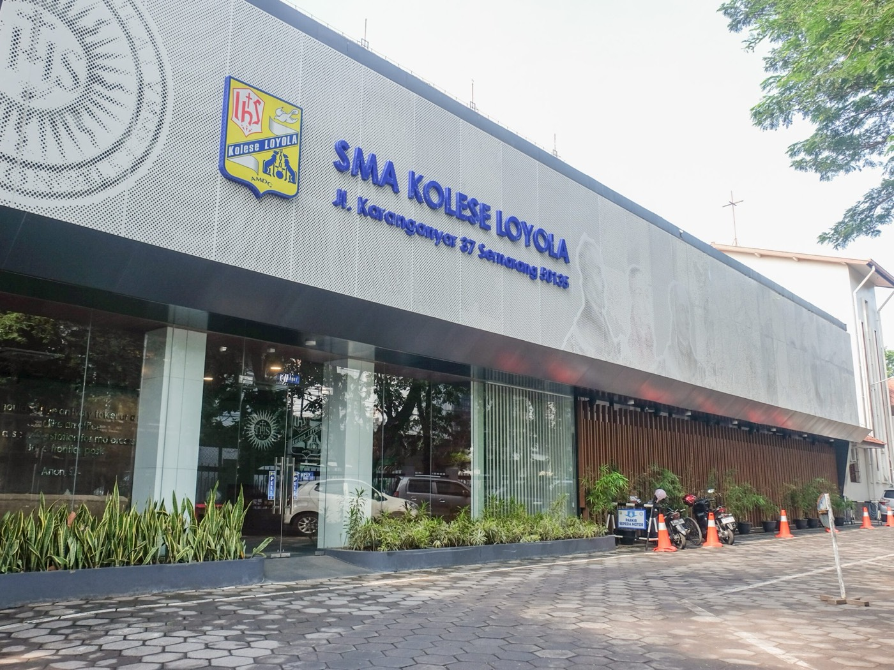
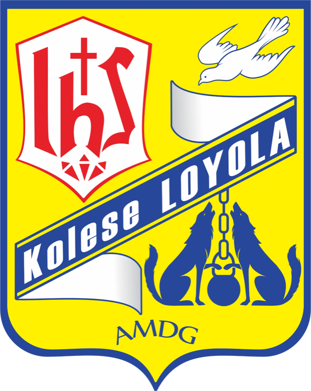

1949
Berdiri sebagai Canisius VHO
Agustus 1949, Pater Jan van Waayenburg, SJ mendirikan SMA Canisius VHO, sekolah persiapan menuju perguruan tinggi, di Bruderan Kalisari, Semarang.
Profil sekolah
Mengenal sejarah, santo pelindung, makna logo, dan nilai-nilai yang dipegang Kolese Loyola sejak 1949.

Jejak langkah
Perjalanan Loyola dari sebuah sekolah di Bruderan Kalisari sampai menjadi kolese Jesuit di Jalan Karanganyar.
Agustus 1949, Pater Jan van Waayenburg, SJ mendirikan SMA Canisius VHO, sekolah persiapan menuju perguruan tinggi, di Bruderan Kalisari, Semarang.
Sekolah pindah ke Jalan Karanganyar dan memakai nama Kolese Loyola. Kelas putra disebut Loyola Putra, sedangkan kelas putri pindah ke Bangkong dan dikelola para suster Fransiskan.
Pada 27 Desember 1962 para alumni membentuk KEKL (Keluarga Eks Kolese Loyola), wadah persaudaraan alumni Loyola.
Mulai 1 Agustus 1968 bagian putra dan putri resmi menjadi dua sekolah, Loyola I dan Loyola II. Pada tahun yang sama Kolese Loyola resmi menerima siswi mulai kelas 1.
Sejak 1 Februari 1982 Loyola II berganti nama menjadi SMA Sedes Sapientiae, sehingga pemisahan dengan Kolese Loyola menjadi sempurna.
Serikat Yesus menambahkan Commitment pada nilai Competence, Conscience, dan Compassion. Sejak itu dikenal nilai 4C.
Kolese Loyola merayakan 75 tahun karya pendidikan (1949–2024) dan terus berkarya sampai sekarang.

Santo pelindung
Nama sekolah ini diambil dari Santo Ignatius Loyola (1491–1556), pendiri Serikat Yesus atau Jesuit. Sejak awal, para Jesuit menjadikan pendidikan sebagai salah satu karya utama. Saat Ignatius wafat pada 1556, Serikat Yesus sudah memiliki sekitar 40 kolese.
Di Indonesia, kolese Jesuit pertama adalah Kolese Xaverius di Muntilan yang didirikan Pater Frans van Lith, SJ. Semangat yang sama kemudian hidup di Semarang lewat Kolese Loyola.
Puerilis institutio est renovatio mundi.
Nilai-nilai Loyola
Ad Maiorem Dei Gloriam, artinya “demi kemuliaan Allah yang lebih besar”. Semboyan Serikat Yesus ini juga tertulis di logo Loyola.
Menjadi pribadi yang hidup bagi dan bersama sesama, bukan hanya untuk diri sendiri.
Competence, Conscience, Compassion, dan Commitment: empat nilai yang ditanamkan pada setiap siswa.
Lihat penjelasan 4C